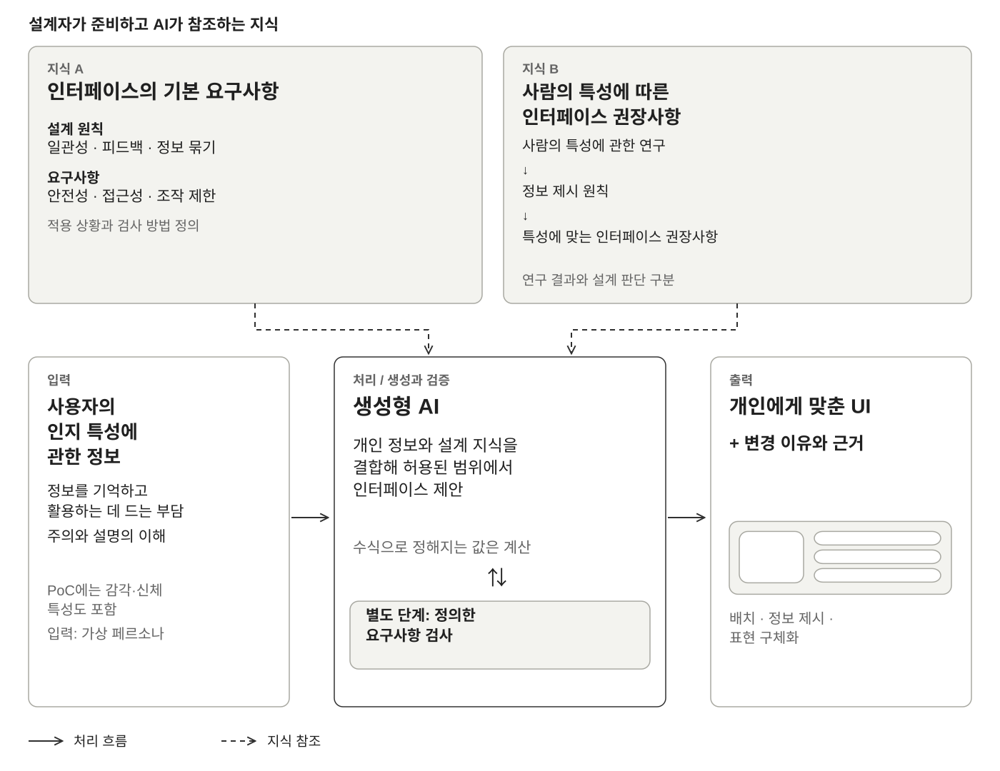
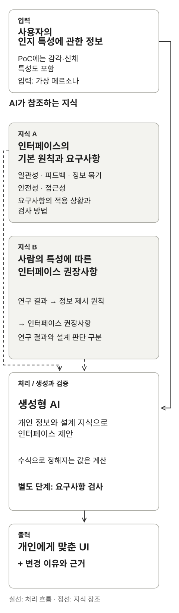
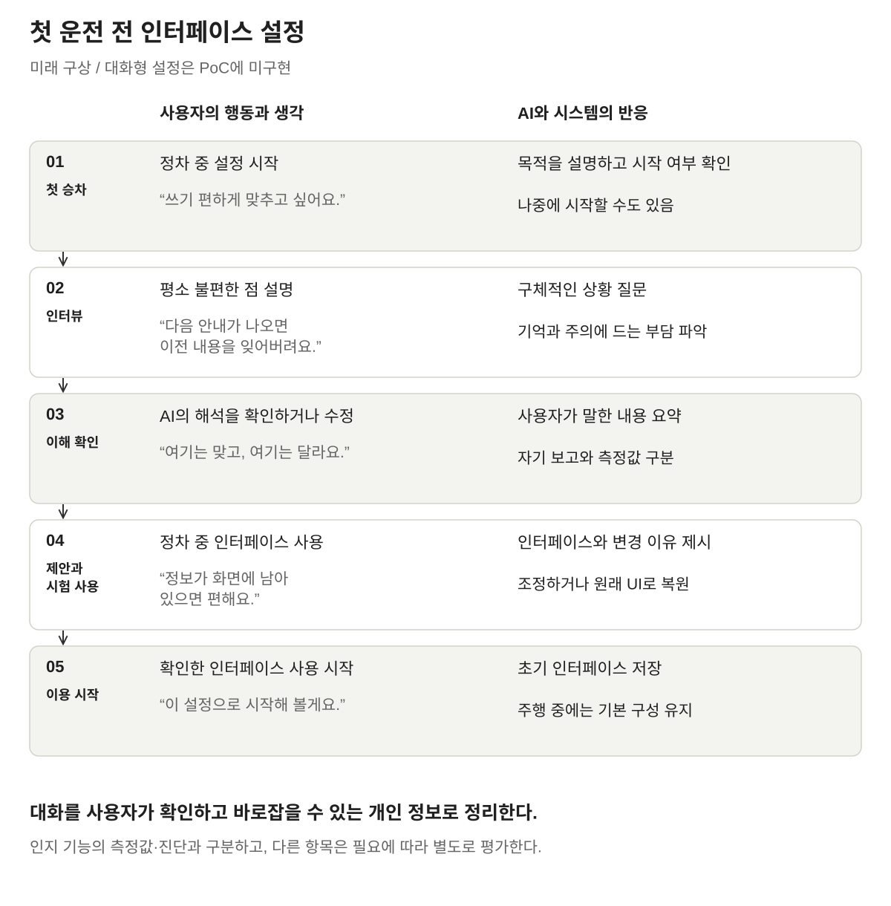
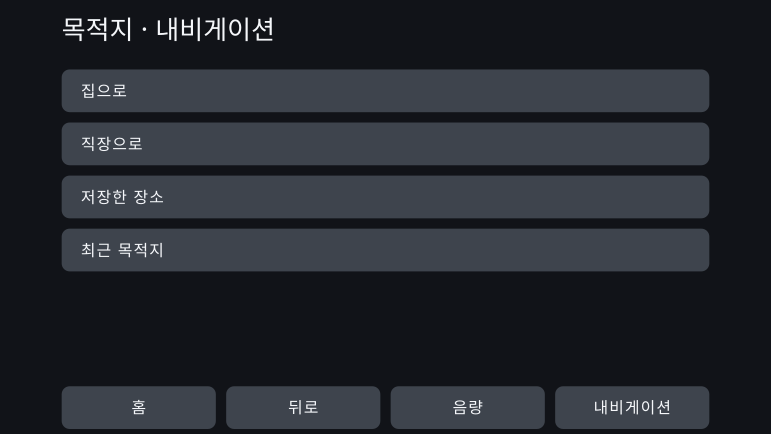
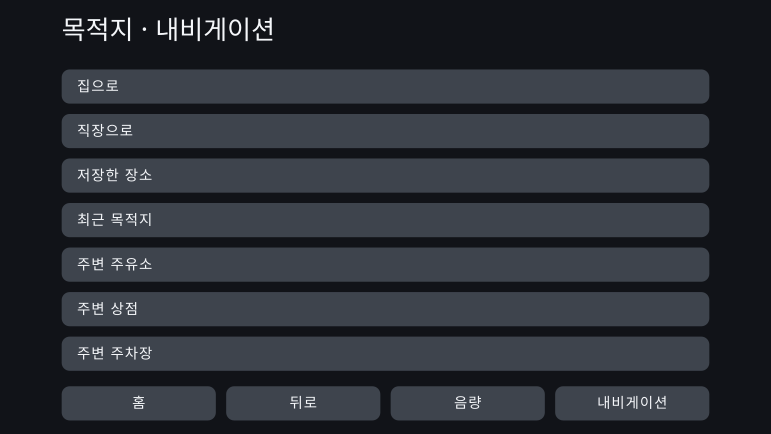
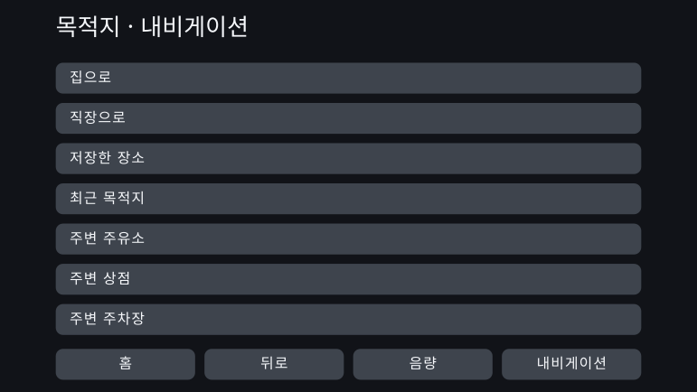

제약 기반 디자인을 통한 인터페이스 개인화
2026년 8월
개요
인터페이스 사용과 관련된 인지 특성 정보를 입력받아, 그 사람에게 맞춘 인터페이스를 생성하는 시스템을 제안한다. 인터페이스 설계 원칙, 안전성과 접근성 요구사항, 사람의 특성에 관한 연구를 함께 활용한다.
사람이 요구사항과 적용 상황을 정의하고, 그 경계 안에서 생성형 AI가 구체적인 안을 만드는 ‘제약 기반 디자인’을 사용했다. 자동차 내비게이션을 시험 사례로 삼아 감각·신체 특성도 포함하는 가상 페르소나 13종의 인터페이스를 생성하고, 별도 단계에서 요구사항에 맞는지 검증하는 개념 검증(PoC)을 구현했다.
비교에서는 신체 특성에 따른 뚜렷한 화면 구성 변화를 한 사례에서 확인한 반면, 다수의 생성물에서는 큰 시각적 변화가 보이지 않았다. 사용자를 대상으로 사용성과 안전성을 평가하지는 않았지만, 생성형 AI에 판단을 맡길 수 있는 범위와 개인화의 여지를 좁히고 있던 설계 조건을 드러냈다.
배경: 하나의 인터페이스로 얼마나 다양한 필요를 충족할 수 있을까
많은 제품은 되도록 많은 사람이 쓸 수 있는 공통 UI를 설계해 제공한다. 그러나 한 번에 파악할 수 있는 정보의 양, 주의를 기울이는 수월함, 표현을 이해하는 수월함, 세밀한 조작의 정확도에는 개인차가 있다. 공통 UI가 많은 사람을 배려하더라도, 개개인에게 잘 맞는다고는 할 수 없다.
집단 단위의 평가에도 한계가 있다. 예컨대 미국 NHTSA가 2013년에 공표한 자율 가이드라인에서는 시선 관련 각 허용 기준을 참가자 24명 중 최소 21명이 충족하도록 요구한다. 그렇다고 모두가 똑같이 편하게 사용할 수 있다는 뜻은 아니다. [1]
글자 크기나 표시량을 바꿀 수 있는 제품이라도, 사용자는 설정의 존재를 알아차리고 자신의 불편함과 연결 지어 적절한 조정을 선택해야 한다. 설정 기능이 충분히 활용되지 못한 채, 맞지 않는 상태로 쓰이고 있는 것은 아닐까. 이 의문이 출발점이었다.
자동차 내비게이션에서는 화면을 보고 조작하는 데에는 운전에도 필요한 주의가 쓰인다. [1] 사용자에게 맞지 않는 인터페이스가 그 부담을 키운다면, 처음부터 개인에게 맞춘 인터페이스가 사용성과 안전성 모두에 도움이 될 수 있는지 탐구할 가치가 있다.
생성형 AI를 활용하면 개인의 정보와 설계 지식을 인터페이스로 구체화하는 과정을 프로토타입으로 만들 수 있다. 이를 통해 사람마다 별도의 인터페이스를 직접 설계하는 작업을 줄일 수 있는지 탐구했다.
이 프로젝트에서는 사람들이 설정 기능을 얼마나 자주 사용하는지, 맞지 않는 인터페이스가 사고 위험에 어떤 영향을 미치는지 조사하지 않았다.
제안 — 개인의 정보와 두 종류의 설계 지식을 잇는다
시스템은 인터페이스 사용과 관련된 인지 특성 정보를 입력받는다. 이번 개념 검증에서는 감각·신체 특성도 포함한 가상 페르소나를 사용했다. AI는 이 정보와 함께 미리 준비한 두 종류의 지식을 참조한다. 하나는 인터페이스의 기본 설계 규칙이고, 다른 하나는 사람의 특성을 권장 인터페이스 설계로 연결하는 지식이다.
AI가 허용된 범위 안에서 인터페이스를 생성하고, 별도 단계에서 요구사항에 맞는지 검증한다. 출력에는 그 사람에게 맞춘 인터페이스와 어디를 왜 바꾸었는지에 대한 설명이 포함된다.


입력: 그 사람에 관한 정보
입력 정보에는 정보를 기억하고 활용하는 것이 얼마나 수월한지, 다른 자극에 쉽게 주의를 빼앗기는지, 어떤 설명을 이해하기 쉬운지 등이 포함된다. 구현에서는 시각과 손의 정밀 조작 특성도 다룬다. 진단명만으로 화면을 정하지 않고, 인터페이스 사용과 관련된 정보를 활용한다.
지식 A: 인터페이스의 기본 요구사항
일관성, 조작에 대한 피드백, 정보 묶기, 글자와 조작 요소의 가시성 등 인터페이스의 기본 설계 원칙을 정리한다. 차량 내 조작 제한과 접근성 요구사항도 적용되는 상황과 함께 정의한다.
지식 B: 사람의 특성을 권장 인터페이스로 연결하기
사람의 특성에 관한 연구를 정보 제시 원칙과 연결하고, 이를 다시 인터페이스 설계에 연결한다. 예를 들어 과제를 수행하면서 정보를 기억하는 데 어려움이 있다면 기억 부담을 줄이는 방향을 생각할 수 있고, 이는 필요한 정보를 화면에 계속 표시하는 설계로 이어질 수 있다.
사람의 특성에 관한 연구가 자동차 내비게이션의 구체적인 설계값까지 제시하는 것은 아니다. 연구로 밝혀진 사실과 그 사실을 바탕으로 내린 설계 판단을 구분한다. 모두에게 도움이 되는 개선은 기본 규칙에 포함하며 개인화의 성과로 보지 않는다.
제안하는 경험: 첫 운전 전에 적합한 인터페이스 찾기
미래 구상. 대화를 통한 초기 설정은 이번 PoC에서 구현하지 않았다.
새 차의 운전석에 처음 앉았다고 가정해 보자. 정차한 상태에서 AI 에이전트가 사용 방식에 대해 묻는다. 사용자는 전문적인 설정 항목을 고르는 대신, 평소의 불편함이나 쓰기 편하다고 느끼는 방식을 이야기한다.

-
첫 승차: 대화를 시작한다
AI: “화면을 맞춰 드릴 수 있도록 평소 인터페이스를 어떻게 사용하시는지 조금 알려 주시겠어요? 원하시면 나중에 해도 됩니다.”
사용자는 목적을 이해하고, 지금 시작할지 나중에 할지를 고른다.
-
인터뷰: 불편한 점을 이야기한다
AI: “내비게이션 안내가 연달아 나올 때 어떤 부분을 따라가기 어려우신가요?”
사용자: “다음 안내가 나오면 이전 내용을 잊어버릴 때가 있어요.”
AI는 구체적인 상황을 묻고, 정보 유지나 주의를 기울이는 방식과 관련된 불편함을 정리한다.
-
이해 확인: 사용자가 AI의 해석을 바로잡기
AI: “단계를 기억하는 것보다 필요한 정보가 화면에 남아 있으면 더 편하시겠네요. 제가 제대로 이해했나요?”
사용자는 AI의 해석을 확인하거나 바로잡는다. 대화에서 사용자가 직접 설명한 정보는 인지 기능 측정값이나 진단과 구분한다. 측정이 필요한 정보는 별도로 평가한다.
-
제안과 시험 사용: 이유를 듣고 화면을 시험한다
AI: “기억해야 할 내용을 줄일 수 있도록 현재 조작과 다음 단계를 함께 보여 주는 화면을 제안합니다.”
사용자는 정차 중에 목적지 선택 등을 시험한다. “이전 화면이 더 이해하기 쉬웠어요”, “이 표현은 바꾸고 싶어요”고 전하고, 필요하면 제안을 조정하거나 원래 UI로 되돌릴 수 있다.
-
이용 시작: 확인한 UI를 사용한다
사용자가 확인한 UI를 초기 상태로 저장한다. 주행 중에는 사용자가 익힌 기본 구성을 유지한다. 설정을 다시 살펴보고 싶을 때는 정차 중에 조정할 수 있다.
이 대화는 사용자가 자신의 필요를 설명하고 오해를 바로잡을 수 있는 과정을 통해 적합한 초기 설정을 마련하기 위한 것이다. 사용자를 단 한 번 분류하고 끝내는 과정이 아니다.
구현 — 지켜야 할 조건과 AI에 맡기는 판단을 나눈다
개인의 특성 정보를 받아 인터페이스를 생성하고, 검증·렌더링·비교하는 파이프라인을 구현했다. 대화형 인터뷰 대신 서로 다른 특성을 가진 가상 페르소나 13종을 입력으로 사용했다.
자동차 내비게이션은 화면 면적, 터치 영역 크기, 표시 정보량, 주행 중 허용되는 조작 등 구체적인 요구사항을 다룰 수 있어 시험 사례로 선택했다.
제약 기반 디자인 접근
이 프로젝트에서 말하는 제약 기반 디자인은 사람이 지켜야 할 조건과 적용 범위를 설계하고, 그 안에서 AI가 구체적인 해를 제안하는 방법이다.
규칙 기반의 파라메트릭 접근에서는 입력마다 어떤 값이나 선택지를 적용할지 미리 정한다. 여기서는 허용 범위와 각 판단을 뒷받침하는 근거를 정의하고, 아직 정해지지 않은 값과 표현은 생성형 AI가 선택하도록 했다. 구현에서는 계산으로 구한 값과 AI의 판단을 함께 사용했다.
| 근거에서 알 수 있는 것 | 구현 방식 |
|---|---|
| 값이나 관계식까지 정해진다 | 확인된 조건·적용 범위 안에서 계산한다 |
| 조정할 방향은 알지만, 정도는 정해지지 않는다 | 방향과 제약을 지키는 범위에서 구체화하고, 미검증 설계 판단임을 남긴다 |
| 근거만으로는 타당한 선택이 정해지지 않는다 | 탐색적 제안으로 다루고, 평가가 필요한 것으로 구분한다 |
연구 결과를 인터페이스 설계에 적용할 때는 출처, 적용 조건, 설계 판단을 기록했다. UI와 함께 변경 이유를 출력함으로써, 특정 사용자에게 그 설계를 제안한 이유를 추적할 수 있게 했다.
생성한 인터페이스를 별도 단계에서 검증하기
인터페이스는 화면 요소와 배치를 기술하는 구조화된 데이터로 생성하고, 그 데이터를 바탕으로 렌더링한다. 수치와 구조에 관한 요구사항은 코드로 검사한다. 의미 해석이 필요한 일부 요구사항은 별도의 대규모 언어 모델(LLM) 검사로 평가한다. 자동 검사 범위 밖의 항목이나 정보가 부족해 확인할 수 없는 항목도 기록한다.
이 검사는 출력이 정의된 요구사항을 충족하는지 확인한다. 더 사용하기 쉬운지, 더 안전한지는 사용자 평가가 필요하다.
설계 과정에서 상충하는 요구사항이 발견되면 AI가 이를 제시하고, 사람이 수정 방법을 결정한다. AI가 인터페이스를 생성할 때마다 요구사항을 임의로 바꾸지는 않는다.
UI 비교 — 크게 바뀐 사례와 거의 바뀌지 않은 사례
비교의 기준은 개인의 특성을 입력하지 않고 공통 기본값으로 만든 UI다. 동일한 기능 구성에서, 개인의 특성을 입력했을 때의 출력을 비교했다.
아래 이미지는 프로토타입의 출력이며, 시판 내비게이션의 개선 전후가 아니다. 페르소나도 실재하는 사용자를 재현한 것이 아니라, 특성의 영향을 확인하기 위한 가상의 입력이다.
터치 영역이 커진 사례
PS-12 | 세밀한 터치 조작이 어렵다는 신체 특성을 가진 페르소나
PS-12는 기준 페르소나 PS-01과 연령·인지·감각 특성이 같고, 손의 정밀 조작 능력만 다르다. 이미지에서는 각 터치 영역이 커지고 화면 중앙 항목 수가 7개에서 4개로 줄었다. 하단의 고정 버튼은 이 수에 포함하지 않았다.
공통 기본 UI

개인 특성을 입력해 생성한 UI


터치 영역이 커지면 한 화면에서 선택할 수 있는 항목 수는 줄어든다. 동일한 기능을 유지하도록 설계했지만, 이 화면만으로는 이후 화면으로 이동하기가 얼마나 쉬운지 알 수 없다.
구성이 거의 바뀌지 않은 사례
PS-01 | 기준으로 설정한 페르소나
글자 크기에는 작은 차이가 있지만, 항목 수, 배치, 터치 영역의 크기는 거의 같았다. 이번 규칙과 입력의 조합으로 생성한 화면 구성은 공통 기본 인터페이스와 크게 다르지 않았다.
공통 기본 UI


개인 특성을 입력해 생성한 UI


결과와 고찰 — 생성의 자유도는 어디에 남았는가
생성형 AI가 더하는 가치는 아직 입증되지 않았다
직접 화면을 비교했을 때 배치가 뚜렷하게 달라진 출력은 PS-12뿐이었다. 다른 출력도 표현이나 설정에는 차이가 있었지만, 겉모습만으로는 가치의 큰 차이를 확인하기 어려웠다.
PS-12의 변경도 표시 크기나 표시량을 조정하는 설정으로 실현할 수 있는 범위였다. 설정을 직접 찾지 않아도 처음부터 적합한 인터페이스를 사용할 수 있다는 경험에는 가치가 있을 수 있다. 이 경험의 가치와 인터페이스 생성에 생성형 AI가 필요한지는 별도로 평가해야 한다.
이번 개념 검증에서는 인지 특성에 맞춘 인터페이스가 과제 수행을 개선했는지, 생성형 AI가 규칙 기반 접근보다 더 나은 인터페이스를 만들었는지 보여 주지 못했다.
이번 구현에서 가능한 설계 범위는 좁았다
글자와 조작 대상에 필요한 크기를 확보하고, 화면 면적과 표시량의 조건을 적용하자 고를 수 있는 구성이 한정되어 갔다. 구현상 계산이나 고정 구성으로 정해지는 부분도 많아, AI가 여러 타당한 안 중에서 고를 여지는 작았다.
표현을 선택할 여지는 남아 있었지만 화면 구성 변화만큼 눈에 띄지 않아, 시각적 평가만으로는 그 가치를 충분히 파악하지 못했다. 생성형 AI를 평가하려면 여러 타당한 제안이 가능하고 그 차이가 사용자 경험에 의미가 있어야 한다고 판단했다.
이 결과는 이번에 모은 규칙, 채택한 UI 파라미터, 구현한 표현의 범위에 관한 결과다. 자동차 내비게이션 전반이나 개인화 UI 전반의 한계라고는 할 수 없다.
관련 JIS·ISO 등 모든 규격의 전문을 직접 검토하지는 않았다. 입수할 수 있는 논문, 공식 지침, 공개 데이터, 일부 규격의 전문이나 미리보기를 바탕으로 설계 지식을 구성했다. 이러한 자료의 범위가 설계 선택지에 영향을 주었을 수 있다. 규격을 더 검토하면 선택지가 늘어날지, 추가 제한이 생길지는 앞으로 확인해야 한다.
AI와의 작업은 규칙 자체의 개선으로 이어졌다
생성에 사용할 요구사항을 정의하고 검사할 수 있는 형태로 다듬은 과정도 성과였다.
| 발견된 문제 | 설계에 반영한 조치 |
|---|---|
| 같은 요소에 여러 하한이 있어 조합 방식이 모호했다 | 어느 하한도 밑돌지 않도록 적용 관계를 명확히 했다 |
| 주행 중에만 적용해야 할 조건이 정차 중에도 적용되고 있었다 | 조건을 적용하는 주행 상태를 명시했다 |
| 표현의 복잡성과 아이콘의 유무를 하나의 설계 기준으로 묶고 있었다 | 독립된 설계 축으로 나누고, 불필요하게 사라졌던 선택지를 되돌렸다 |
| 어떤 출력에 적용하지 않는 조건까지 AI가 판단 근거로 쓰고 있었다 | 출력마다 참조할 조건을 명시했다 |
| AI에 남길 예정이던 판단이 구현 쪽에서 고정되어 있었다 | 사양과 구현의 역할 분담을 재검토했다 |
AI가 문제를 찾아내면 내가 검토하고, 그 결정을 설계에 반영했다. 이를 반복하며 모든 사람에게 공통으로 적용할 요구사항과 개인에게 맞출 수 있는 부분을 분명히 했다.
앞으로 — 경험의 가치와 생성형 AI의 가치를 확인한다
다음에는 두 가지 물음을 나누어 검증하고 싶다.
첫째, 사용자가 직접 설정하지 않아도 적합한 초기 인터페이스를 제공받는 경험에는 얼마나 가치가 있을까. 대화형 인터뷰, AI의 이해를 바로잡을 기회, 인터페이스 시험 사용을 구현한 뒤 입력 정보의 신뢰성과 사용자 부담을 평가하려 한다.
둘째, 어떤 설계 상황에서 AI가 생성한 제안들의 차이가 더 나은 경험으로 이어질 수 있을까. 요구사항을 지키면서도 정보 구성과 조작 흐름에 여러 타당한 선택지가 남는 상황을 탐구하고 싶다.
실사용자 연구에서는 공통 기본 인터페이스, 개인 특성 정보로 규칙에 따라 조정한 인터페이스, AI가 생성한 인터페이스를 같은 과제로 비교할 계획이다. 과제 완료 시간, 오류, 시선 이동, 주관적 작업 부담을 살펴 개인화의 효과와 생성형 AI 사용의 효과를 구분할 수 있을 것이다.
관련 규격을 더 자세히 검토하고, 연구 근거와 설계 판단의 구분도 다듬을 계획이다. 요구사항을 검사 가능하게 만드는 것과 함께, 그 안에 사용자에게 의미 있는 차이를 주는 선택지를 남기는 것이 다음 과제다.
참고 자료
- NHTSA, Visual-Manual NHTSA Driver Distraction Guidelines for In-Vehicle Electronic Devices(2013년 공표). 자율 가이드라인. 시선 관련 허용 기준은 VI.E, 주의 이탈과 위험에 관한 설명은 본문 I.C 등을 참조. 이 인용은 본 PoC가 해당 시험의 기준을 충족한다고 인증받았다는 뜻이 아니다. Federal Register의 자료